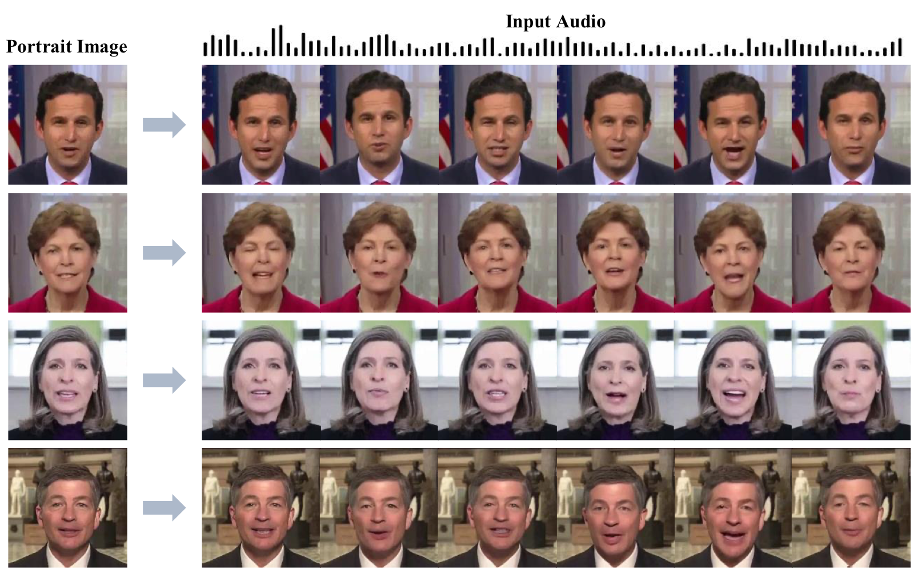
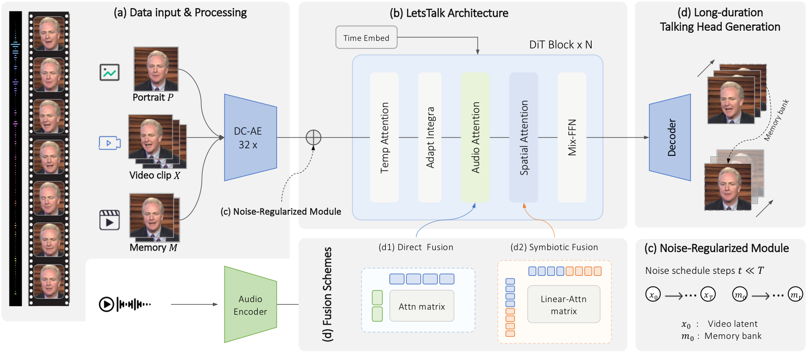
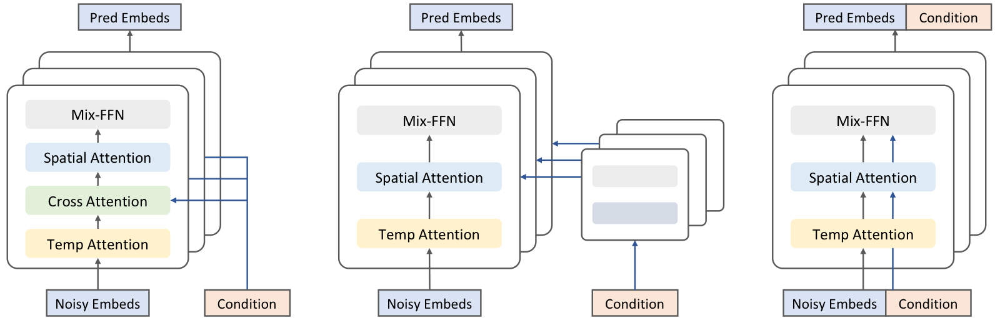
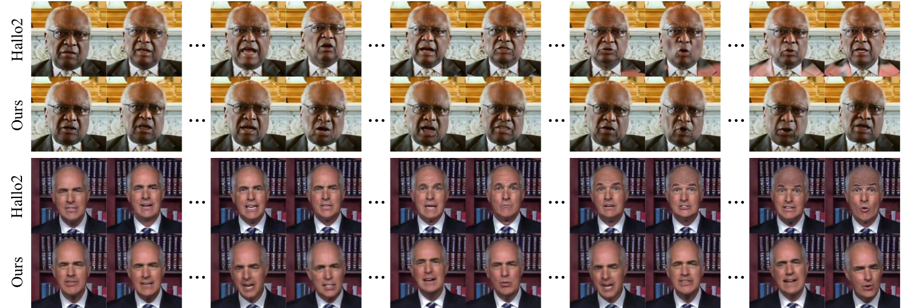

TL;DR: We propose LetsTalk, a diffusion transformer framework for audio-driven portrait animation. LetsTalk combines a deep compression autoencoder, an efficient spatiotemporal transformer, asymmetric multimodal fusion, and a noise-regularized memory bank to generate realistic, temporally coherent, and scalable long-duration talking videos.

Given a single reference portrait and driving audio, LetsTalk produces realistic talking videos with stable identity, precise audio-animation alignment, and long-duration temporal coherence. The accepted TMM version further extends the original system with a memory bank mechanism for scalable long-video generation.
Long-duration talking video synthesis faces enduring challenges in achieving high video quality, portrait consistency, temporal coherence, and computational efficiency. As video length increases, visual degradation, portrait drift, temporal artifacts, and error accumulation become increasingly problematic. To address these challenges, we present LetsTalk, a diffusion transformer framework equipped with multimodal guidance and a novel memory bank mechanism. LetsTalk explicitly maintains contextual continuity and enables robust, high-quality, and efficient generation of long-duration talking videos. In particular, LetsTalk introduces a noise-regularized memory bank to alleviate error accumulation and sampling artifacts during extended video generation. To further improve efficiency and spatiotemporal modeling, LetsTalk employs a deep compression autoencoder and a spatiotemporal-aware transformer with linear attention for effective multimodal fusion. We systematically analyze three fusion schemes and show that combining Symbiotic Fusion for portrait features and Direct Fusion for audio achieves superior visual realism and precise speech-driven motion while preserving movement diversity. Extensive experiments demonstrate that LetsTalk establishes new state-of-the-art generation quality, produces temporally coherent and realistic talking videos with enhanced diversity and liveliness, and maintains remarkable efficiency with 8× fewer parameters than previous approaches.

Overview of the proposed LetsTalk framework. During training, the reference portrait, driving video clip, and memory clip are compressed by a 32× deep compression autoencoder, while the driving audio is encoded into synchronized audio tokens. The denoising backbone is built from stacked diffusion transformer blocks with temporal attention, audio attention, spatial linear attention, and Mix-FFN. During inference, the memory bank stores historical clean features and feeds them back to the decoder, enabling temporally coherent long-duration talking video generation.

LetsTalk adopts an asymmetric multimodal fusion strategy. Symbiotic Fusion concatenates visual reference tokens with video latent tokens and jointly models them through shared self-attention, improving identity and portrait consistency without a separate heavy reference branch. Direct Fusion injects audio tokens through cross-attention, providing speech-driven motion guidance while preserving visual spatial integrity and motion diversity.

The noise-regularized memory bank maintains contextual continuity across generated clips. In long-duration experiments beyond four minutes, LetsTalk preserves stable identity and visual quality while reducing temporal drift and artifact accumulation compared with previous long-duration talking-head methods.
@article{zhang2026letstalk,
title={Multimodal Diffusion Transformer with Memory Bank for Scalable Long-Duration Talking Video Generation},
author={Zhang, Haojie and Liang, Zhihao and Fu, Ruibo and Liu, Bingyan and Wen, Zhengqi and Liu, Xuefei and Tao, Jianhua and Liang, Yaling},
journal={IEEE Transactions on Multimedia},
year={2026},
note={Accepted, to appear}
}
@article{zhang2024letstalk,
title={Efficient Long-duration Talking Video Synthesis with Linear Diffusion Transformer under Multimodal Guidance},
author={Zhang, Haojie and Liang, Zhihao and Fu, Ruibo and Liu, Bingyan and Wen, Zhengqi and Liu, Xuefei and Tao, Jianhua and Liang, Yaling},
journal={arXiv preprint arXiv:2411.16748},
year={2024}
}